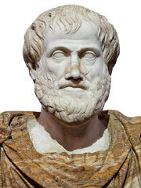
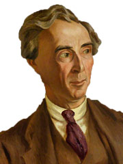

Introduction
While “logic” may simply refer to valid reasoning in everyday life, it is also one of the oldest and most foundational branches of mathematics, often blurring the boundaries between mathematics and philosophy.
Logic is the study of Truth and how we can obtain universal Truths trough mathematical deduction. It is the most basic language of mathematics, and the underlying principle of proof.
|  |  |  |  |
| Aristotle 384 – 322 BC | Chrysippus of Soli c. 279 – 206 BC | Gottfried Wilhelm Leibniz 1646 – 1716 | Bertrand Russell 1872 – 1970 |
Mathematical logic and reasoning dates back many thousand years, to ancient Egyptian architects and Babylonian astronomers. Logical thinking also developed independently in India and China.

Centuries later, a variety of groups of Greek mathematicians and philosophers were discussing the nature of truth, trying to develop a formal system of mathematical logic and deduction. The ideas of Plato, Aristotle and many others carried through the Middle Ages, and were revived by scholars like Saint Thomas Aquinas and various Arabic mathematicians.
Gottfried Leibniz was one of the first mathematicians to symbolic language for logic, similar to what we use today. Since then, logic has become closely entwined with concepts like axioms and proof, infinity, or number sets.
Propositional Calculus
There are many examples of mathematical statements or propositions. For example, 1 + 2 = 3 and 4 is even are clearly true, while all prime numbers are even is false. In logic we are often not interested in these statements themself, but how true and false statements are related to each other. Therefore we represent the propositions simply by placeholders like P and Q. All these propositions have to be either true (T) or false (F).
If we have two propositions, P and Q, we can form a third one P ∧ Q. The small wedge means and, and P ∧ Q is only true if both P and Q are true. This relationship can be represented in a truth table, where we can look up the value of P ∧ Q given the values of P and Q. There are four possibilities:
| P | Q | P ∧ Q |
| T | T | T |
| T | F | F |
| F | T | F |
| F | F | F |
Similarly, the proposition P ∨ Q is true if either one or both of the conditions P and Q are true. The upside-down wedge means or, and here the corresponding truth table:
| P | Q | P ∨ Q |
| T | T | T |
| T | F | T |
| F | T | T |
| F | F | F |
Other operations which can be applied to logical propositions are equality, P ≡ Q, which is true if both operands have the same value (both true or both false), as well as exclusive or, P ⊕ Q, which is true if one but not both of the operands are true:
| P | Q | P ≡ Q |
| T | T | T |
| T | F | F |
| F | T | F |
| F | F | T |
| P | Q | P ⊕ Q |
| T | T | F |
| T | F | T |
| F | T | T |
| F | F | F |
Finally there is the implication P  Q. A false proposition P can imply anything, but a true proposition P can only imply another true proposition Q. Note that, unlike all the operations above, the implication is not symmetric: we can’t just swap P and Q.
Q. A false proposition P can imply anything, but a true proposition P can only imply another true proposition Q. Note that, unlike all the operations above, the implication is not symmetric: we can’t just swap P and Q.
| P | Q | P ⊕ Q |
| T | T | T |
| T | F | F |
| F | T | T |
| F | F | T |
It is also possible to swap the value of a proposition, using the not operator ¬. For example, if P is true then ¬P is false. Applying the not operator twice gives us P = ¬¬P.
Having defined the varios logical operators, we can now combine them to form more complex expressions. For example, A ∧ (B ∨ C) is true if A is true and at least one of B and C is true. Notice that we need parenthesis, because A ∧ (B ∨ C) can have different values than (A ∧ B) ∨ C!
We can combine logical operators in the same way we are used from the arithmetic operators +, –, × and ÷. Together, the logical operators form a new kind of algebra, called Boolean algebra, named after mathematician George Boole (1815 – 1864).
Many of the rules we know from elementary algebra translate into Boolean algebra:
| X ∨ (Y ∨ Z) = (X ∨ Y) ∨ Z | x + (y + x) = (x + y) + z |
| X ∧ (Y ∧ Z) = (X ∧ Y) ∧ Z | x × (y × x) = (x × y) × z |
| X ∧ (Y ∨ Z) = (X ∧ Y) ∨ (X ∧ Z) | x × (y + z) = x × y + x × z |
Of Knights and Knaves
Lewis Carroll (aka Charles
Lutwidge Dodgson, 1832 – 1898)
Logic and truth tables can be used to solve a variety of problems of puzzles, many famous of which were invented by the writer of Alice in Wonderland, Lewis Carroll (1832 – 1898).
A shipwrecked sailor arrives on a mysterious island inhabited by knights, who always tell the truth, and knaves, who always lie. Trying to get home, he knocks at the door of one of the huts. The islander who opens the door says that he and his wife are both knaves. Who should the sailor ask to find the right way home?
This problem is easy to solve using logic and truth tables. Let H and W be two propositions which are true if the husband or wife are knights, respectively, and false if they are knaves.
The husban said that both he and his wife are knaves, i.e. that ¬H ∧ ¬W. If he is a knight, this proposition is true, and if he is a knave, it is false. In particular, we know that H ≡ (¬H ∧ ¬W) must be true.
We can draw a truth table to determine the value of this proposition depending on the possible values of H and W:
| H | W | ¬H ∧ ¬W | H ≡ (¬H ∧ ¬W) |
| T | T | F | F |
| T | F | F | F |
| F | T | F | T |
| F | F | T | F |
The only row in which H ≡ (¬H ∧ ¬W) is true is the second row, where the husband is a knave and the wife is a knight. Therefore the sailor should ask the wife for directions home.

Why is a raven like a writing desk?
You could have easily solved the Knights and Knaves puzzle above without creating an entire truth table, but maybe not this much more complex problem:
The sailor meets three different islanders, which we shall simply call A, B and C. Islander A claims that B and C are knights, and B says that A is a knave and C is a knight. Who is telling the truth?
Since we have an additional person there will be twice as many rows in the truth table, but the principles remain the same. In this example we have to find the row where (A ≡ (B ∧ C)) ∧ (B ≡ (¬A ∧ C)) is true. Can you work out how this proposition corresponds to the original problem?
| A | B | C | B ∧ C | A ≡ (B ∧ C) | ¬A ∧ C | B ≡ (¬A ∧ C) | (A ≡ (B ∧ C)) ∧ (B ≡ (¬A ∧ C)) |
| T | T | T | T | T | F | F | F |
| T | T | F | F | F | F | F | F |
| T | F | T | F | F | F | T | F |
| T | T | F | F | F | F | T | F |
| F | T | T | T | F | T | T | F |
| F | T | F | F | T | F | F | F |
| F | F | T | F | T | T | F | F |
| F | F | F | F | T | F | T | T |
The only possible solution is when A, B and C are all knaves. Unfortunately, there is no one the sailor can trust…
© 1986 Jim Henson Productions, Lucasfilm, TriStar Pictures (Fair Use Policy)

After years of sailing across the ocean, Odysseus arrives in the remote city of Mathigon. He wants to ask the Oracle for the directions home, but the gate to the temple of wisdom is guarded by three gods: Apollo, Bacchus, and Chronos. One of the gods always tells the truth, one of them always lies, and one god tells the truth and lies at random.
In order to pass the gate, Odysseus has to determine which god tells the truth, which one lies, and which one responds randomly – by asking three yes/no questions, each directed to a single god. The gods understand English, but they always answer in Olympian. The Olympian words for yes and no are ho and to, but it is unknown which way round. How should Odysseus proceed?
Note that you can ask multiple questions to the same god, but you can’t direct a question to multiple gods at once. The second and third question may depend on the previous answers…